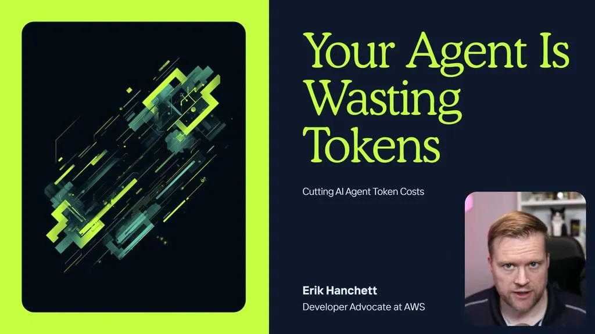
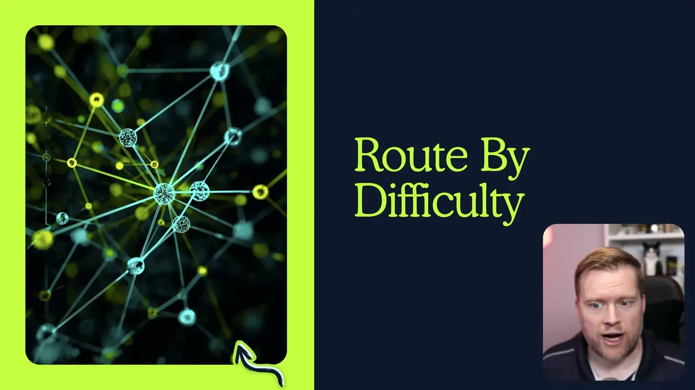
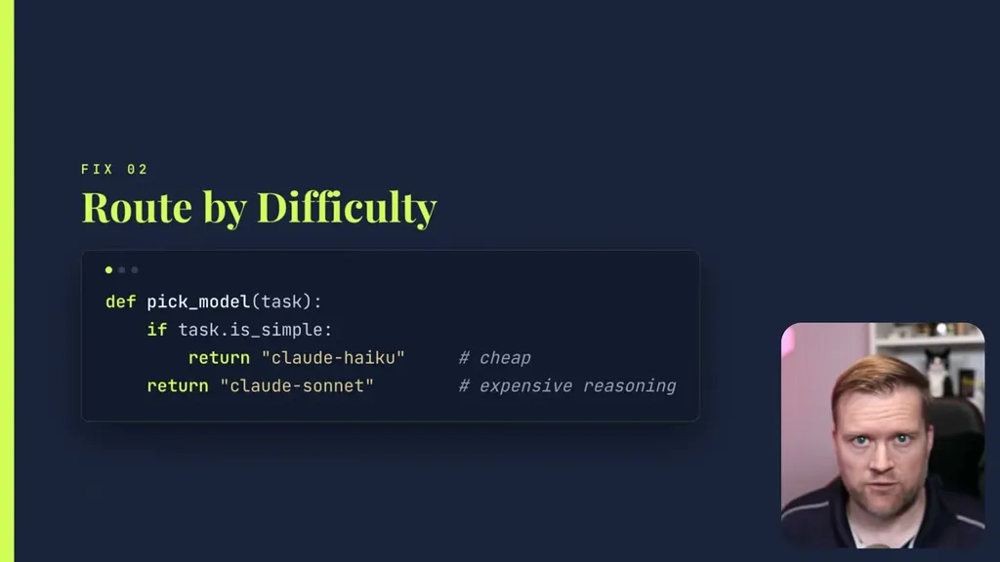
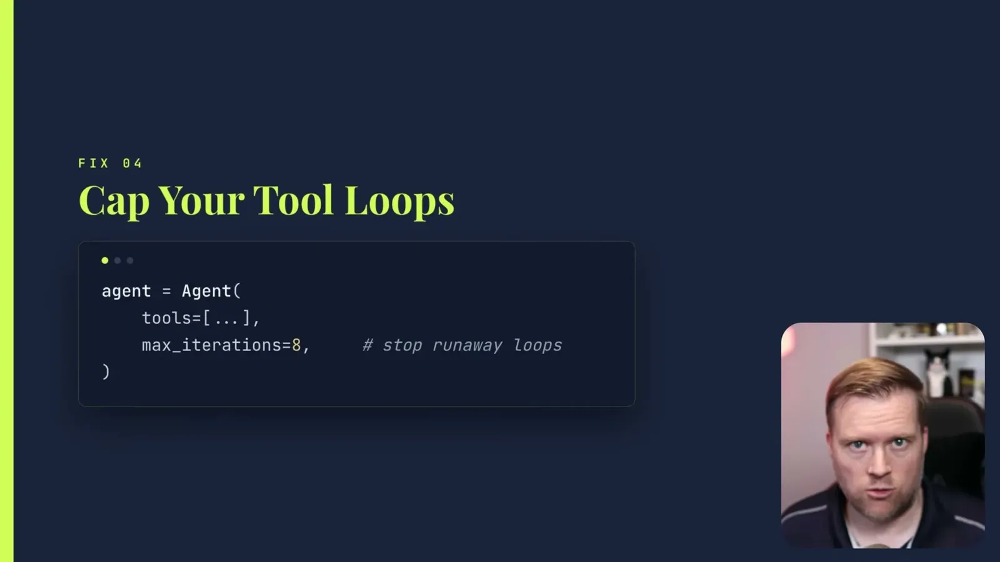

Setting a cache-prompt flag means the full system prompt is sent only on the first call of an agent; subsequent calls send a much-reduced prompt. The same caching applies to tool prompts and messages.
“on the first call of your agent, it will send the full system prompt over and then on every subsequent call, it will have a much reduced system prompt being sent over”
▶ watch at 00:00
Rather than using the most expensive model for every task, route difficult tasks to a frontier model and simpler tasks to a cheaper one (e.g. Claude Haiku vs. Claude Sonnet), optionally using a cheap model itself to decide the routing.
“if it's something simpler, you want to use a cheaper model. In this case, maybe we use Claude Haiku for a cheap something cheap and then use Claude Sonnet for something a little bit more difficult”
▶ watch at 01:03
Large tool results can be stored locally or in the cloud and summarized rather than being resent to the model on every call in the loop. Separately, uncapped tool-call loops can run 10-20 times or enter an infinite loop, so a max-iterations cap should always be set, and observability tools should be used to check how long each tool call takes and how often it loops before deployment.
“If you have a large tool result that's coming back, you can store it locally or in the cloud and then use some kind of summarization that saves on tokens”
▶ watch at 01:34“if you don't cap that tool call, then it might run 10, 20 times. It might get into an infinite loop, which would be very bad for your token usage”
▶ watch at 02:34
In multi-turn conversations, the full history is resent on every call by default, which can consume thousands of tokens. Strands Agents' sliding-window conversation manager instead looks back only at the last 10 messages (configurable), at the cost of losing earlier history unless it's separately summarized into the context.
“sliding window conversation manager, which which this does is it looks back at the last 10 messages and only sends those back”
▶ watch at 03:37
| Stance | Claim | t |
|---|---|---|
| recommends | Caching the system prompt sends the full prompt only on the first agent call, then a reduced version on later calls. | 00:00 |
| recommends | Route simple tasks to a cheaper model (e.g. Claude Haiku) and difficult tasks to a more capable one (e.g. Claude Sonnet) instead of using one model for everything. | 01:03 |
| recommends | Large tool results should be stored and summarized rather than resent to the model on every call. | 01:34 |
| warns | Without a cap, an agent's tool-call loop can run 10-20 times or become an infinite loop, badly inflating token usage. | 02:34 |
| recommends | Strands Agents' sliding-window conversation manager sends only the last 10 messages instead of the full conversation history on every call. | 03:37 |
Machine-readable copy embedded in this page (script#ontology) and in the corpus ontology.